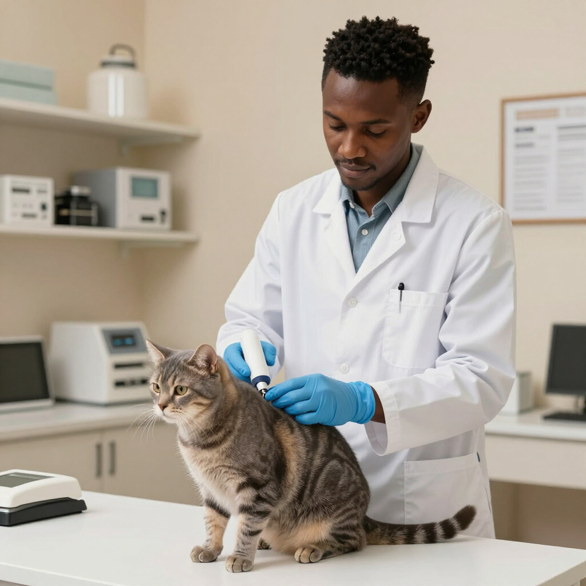

The Partner
Program:
Reuniting
Kenya's Pets
The Trackyn Partner Program is a unified network designed to synchronize pet recovery efforts across Kenya. By bridging the gap between clinical data and real-time recovery, we ensure that every microchipped pet has a digital lifeline back to their family, no matter where they are found in Nairobi or beyond.
We provide veterinarians, shelters, and rescuers with a secure, technocratic ecosystem. This collaborative platform centralizes registration and search functionalities, making the process of reuniting lost companions with their Kenyan families faster, more reliable, and completely transparent for everyone involved.

Benefits For Partners
Veterinarians
- Easier pet reunions
- Build trust with pet owners
- Simple, streamlined workflows
Shelters
- Faster pet reunions
- Optimize shelter space
- Enhanced local community trust
Rescuers
- Visibility on Trackyn
- Immediate pet identification
- Direct connection to pet owners
How to Partner
Enquire
Reach out via our partner form or email to express interest. Our team will provide a detailed overview of the integration process tailored to your facility.
Onboard
Set up your partner account and complete a brief training session. We provide all the digital tools and identifiers needed to connect to Trackyn.
Start Registering &
Searching
Immediately begin registering new microchips and searching the global database for lost pets. Your facility now acts as a vital node in Kenya's safety network.
Partner Testimonials
"Trackyn has transformed how we handle lost pets. The microchip verification is instant and reliable, giving our clients immense peace of mind."
Dr. Kamau
Nairobi Vet Clinic"As a shelter, being part of this network means we spend less time searching for owners and more time providing care. It works seamlessly across Kenya."
Grace Wanjiku
Rift Valley Animal Rescue"The onboarding process was simple. Within days, we were registering chips and helping reunite lost pets in Mombasa. A truly vital service."
Dr. Omondi
Coastal Pet WellnessJoin Our Network
Trackyn is rapidly expanding across Nairobi and the greater Kenyan region. We invite veterinary clinics, animal shelters, and rescue organizations to join our professional network. By partnering with us, you become part of a technocratic ecosystem dedicated to the lifelong safety of Kenyan pets through seamless digital verification and community-driven search alerts.
CLICK TO PARTNER